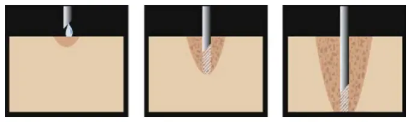
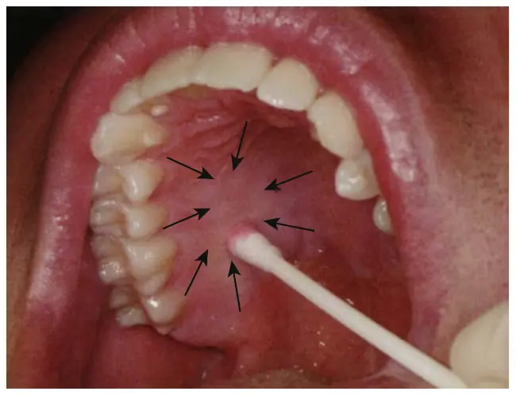

نسخه استخراجشده؛ ترجمه یا تأیید علمی انجام نشده است. وضعیت: captured
بیمار ۴۰ سالهای برای جراحی لثه در سمت پالاتال پرمولرهای بالا آمده است. تا سرنگ را میبیند میگوید: «از تزریق کام متنفرم، دفعهی قبل اشکم درآمد.» آیا تزریق کامی ناگزیر درد دارد؟

نه. بیشتر درد تزریق کامی از روش تزریق است، نه از خود کام. بافت نرم کام دو ویژگی دارد که کار را حساس میکند:
اگر محلول را تند تزریق کنی، فشار بافت بالا میرود و بافت پاره میشود. نتیجه دو درد است: درد هنگام تزریق، و دردناکی ناحیه پس از رفتن بیحسی.
تزریقهای کامی بافت نرم و استخوان کام را بیحس میکنند و برای هموستاز هم به کار میروند، ولی بیحسی پالپ نمیدهند. دو تکنیک AMSA و P-ASA استثنا هستند و جداگانه درس داده میشوند.
بیحسی سطحی را دستکم ۲ دقیقه روی نقطهی ورود نگه دار. کام تنها جای دهان است که باید سواب را در تمام این مدت خودت با دست نگه داری.

سپس با همان چوب سواب، بافت کنار نقطهی ورود را محکم فشار بده تا مخاط صورتی سفید (ایسکمیک) شود و بیمار فشاری کُند و قابلتحمل حس کند، نه درد تیز. این pressure anesthesia بر پایهی نظریهی gate control کار میکند و باید تا وقتی سوزن در بافت است ادامه یابد. دستهی آینه و ابزار فلزی یا پلاستیکی احتمال درد بیشتری دارند.
اشتباه رایج: گفتن «این یکی کمی درد دارد» پیش از تزریق. این جمله بیمار را آمادهی درد میکند و تو را از دقت بیشتر معاف. سیستم کامپیوتری تزریق (C-CLAD) هم تزریق کامی کمدرد را سادهتر کرده است.